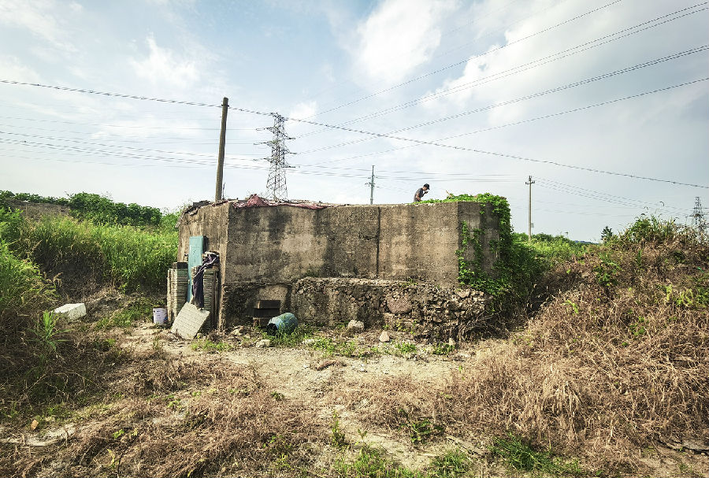
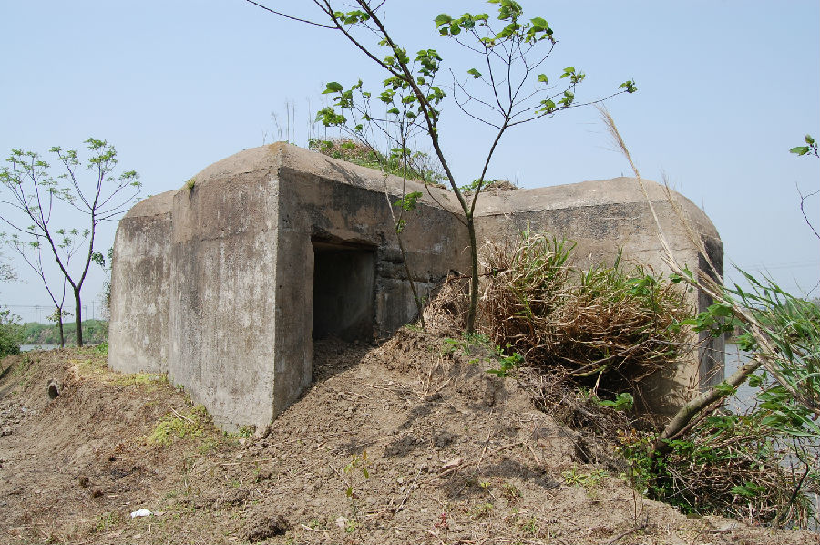

嘉兴市文物保护网 · 市级文物保护点 · 2022-05-16 · 原文

嘉兴东站碉堡

香花坝桥碉堡
抗战碉堡群含创业路碉堡、东塔路碉堡、嘉兴东站碉堡、八里村碉堡、香花坝桥碉堡、大珠楼碉堡及潘家头碉堡，位于南湖区解放街道、南湖街道、大桥镇和新丰镇，皆为抗日战争时期中国政府为抵御日军所建。均为半地下式，形制大体相同，平面略呈扇形，射击和观察口设在面向河道或铁路线一侧，便于监视和观察敌军动向，在淞沪会战期间对牵制日军进攻起到了重要作用。该碉堡群结构坚固，形制特殊，是日军侵华的铁证，具有较高的历史和科学价值。2021年被公布为嘉兴市文物保护点。